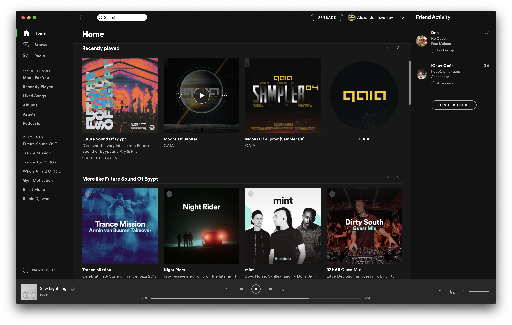
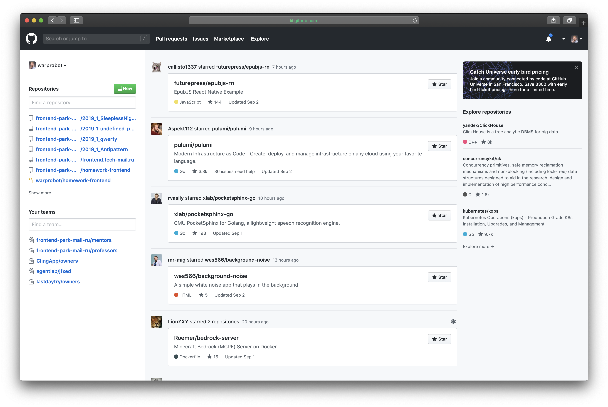
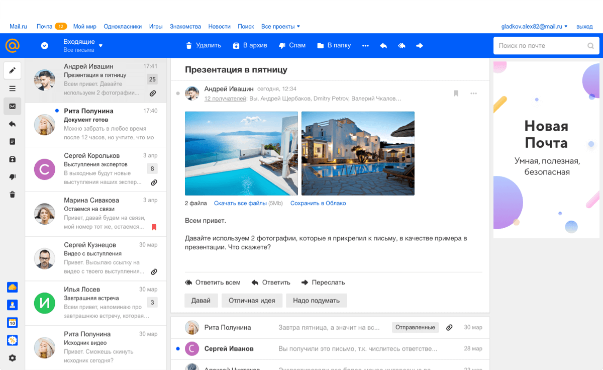
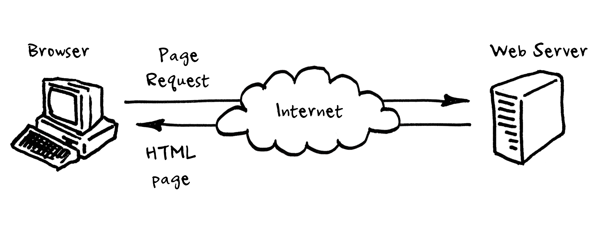
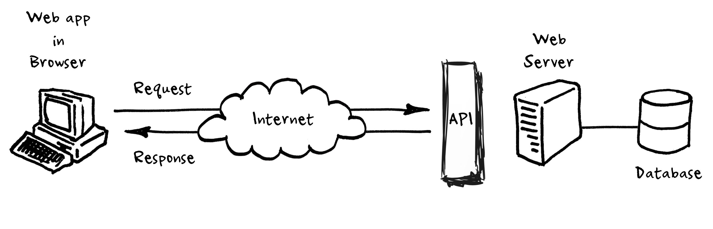
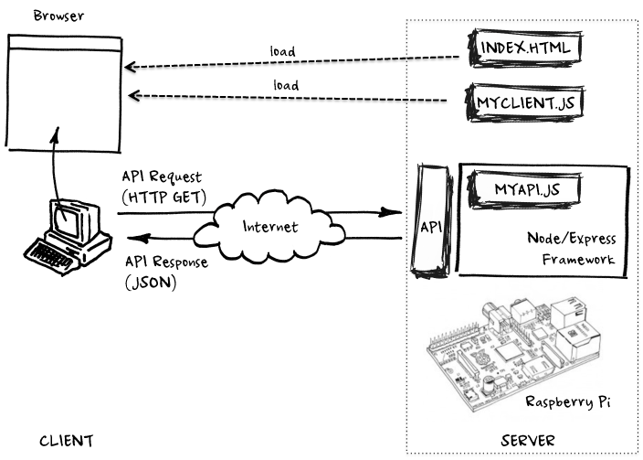
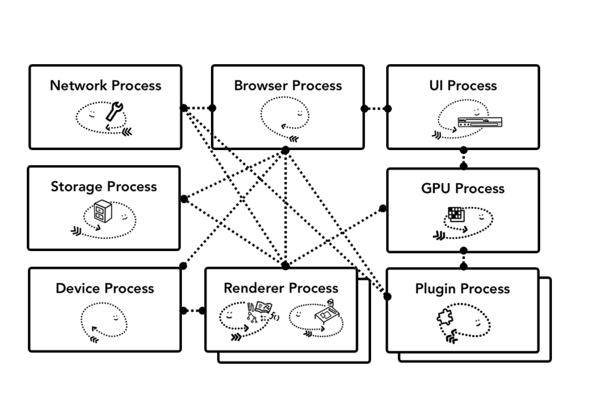

Давайте знакомиться!
Александр
Сарафанников
Почта Mail.ru
Дмитрий
Дорофеев
Truv Inc
Сергей
Володин
Indeed, Japan
Давайте знакомиться #2!
Александр
Цветков
Почта Mail.ru
Михаил
Волынов
Почта Mail.ru
Что такое Frontend?
это вёрстка, HTML и CSS?
Что такое Frontend?
Frontend — публичная часть web-приложений, с которой непосредственно
контактирует и взаимодействует пользователь. Во Frontend входят отображение пользовательского интерфейса,
функционал, выполняющийся на стороне клиента, и обработка пользовательских запросов
Так же можно встретить название "client-side"
Что такое web-приложение?
Web-приложение — клиент-серверное приложение, в котором клиентом
выступает в основном браузер, а сервером — web-сервер. Логика веб-приложения распределена между
сервером и клиентом, хранение данных осуществляется преимущественно на сервере, обмен информацией происходит
по сети
Примеры web-приложений — vk.com, google.com, facebook.com...
Что такое Frontend-разработка?
Frontend-разработка — это работа по созданию публичной части
веб-приложения, с которой непосредственно контактирует пользователь, и функционала который обычно выполняется
на стороне клиента
Семестровый проект
веб-приложение
- Формы входа и регистрации
- Страничка с профилем пользователя, загрузка аватарок
- индвидуальный набор экранов и функций
Примеры семестровых проектов

Примеры семестровых проектов

Примеры семестровых проектов

Примеры семестровых проектов

Менторы
- Приятель
- Наставник
- Менеджер
- Психолог
- Справочное бюро
- Проверятель домашек
- Можно на "ты"
Наша Dream-team Менторов (ч. 1)
- Козинченко Евгений — CEO, LogDoc.org
- Валеев Айдар — тимлид (фронтенд), Logdoc.org
- Елагин Антон — разработчик интерфейсов, Яндекс Карты
- Клонов Александр — разработчик, МКСКОМ
- Науменко Александр — разработчик, Dobro Mail.ru (Проект VK)
- Власов Денис — разработчик, Почта Mail.ru (Проект VK)
Наша Dream-team Менторов (ч. 2)
- Набиев Фарис — разработчик, Почта Mail.ru (проект VK)
- Тяпкин Сергей — разработчик, Сбер
- Боярских Никита — разработчик, Почта Mail.ru (проект VK)
- Барабанов Григорий — разработчик, новостная лента ВК
Пешков Дмитрий
Старший ментор
По любым вопросам по взаимодействию с менторами
Структура курса
- Модуль 1 — 4 занятия + РК1
- Модуль 2 — 4 занятия + РК2
- Совместная предзащита
- Хакатон (?)
- Модуль 3 — 2 занятия + РК3
- Модуль 4 — 2 занятия + РК4
- Защита проекта
Первый модуль
- Введение во Frontend
- Работа с DOM, браузерные события, работа с сетью
- Модульность, разработка компонентов, шаблонизация
- Безопасность web-приложений, архитектура web-приложений и разработка API
РК 1, оценивается в 25 баллов
Второй модуль
- Архитектура web-приложений, роутинг, методологии написания CSS
- Производительность web-приложений и работа с данными в браузере, WebSockets, HTTP/2
- Современные возможности CSS, разработка под мобильные устройства
- Графика, разработка веб-приложений и Frontend Ops
РК 2, оценивается в 30 баллов
Третий модуль
- ЛЕКЦИЯ: Продвинутые подходы разработки SPA
- ЛЕКЦИЯ: Современное состояние JavaScript
РК 3, оценивается в 15 баллов
Четвёртый модуль
- Отслеживание проблем производительности web-приложений, инфраструктура и деплой web-приложений, практики
DevOps
- ЛЕКЦИЯ: Резюме Frontend-разработчика в 2022 году
РК 4, оценивается в 10 баллов
Что по чём?
- Домашнее задание №0
5 баллов
- Рубежный контроль №1
25 баллов
- Рубежный контроль №2
30 баллов
- Хакатон (?)
10 баллов
- Рубежный контроль №3
15 баллов
- Рубежный контроль №4
10 баллов
- Защита проекта
5 баллов
Максимальная сумма баллов за семестр —
100 баллов
Как проходит рубежный контроль
- Выполнение всех (или части) ДЗ в модуле
- Отправка мерж-реквеста
не позднее, чем за сутки
до РК
- Code & Product review, допуск от ментора
- Проверка работы приложения, проверка ДЗ
- Беседа с преподавателем, решение задач, теоретические вопросы
Критерии оценивания
- Техническая часть — выполнение вашей командой требований к проекту
- Индивидуальная часть — ваши личные знания дисциплины
- Дополнительные баллы:
- замутили фичу, которая выходит за рамки нашего курса
- ответили на сложный вопрос, нестандартно подошли к решению задачи
за красивые глаза всё стихийно 😅
Итоговая оценка
-
0 <= "неудовлетворительно"
<= 69
-
70 <= "удовлетворительно"
<= 84
-
85 <= "хорошо"
<= 99
- "отлично"
=== 100 баллов + выступление на защите
Дополнительные критерии (sic!)
Для получения оценки
удовлетворительно
, необходимо следующее:
- Реализованы все экраны приложения согласно разработанным макетам
- Корректно работающая авторизация и регистрация пользователей
- Приложение представляет собой клиентское SPA
- Современный подход к написанию кода приложения
- В приложении присутствует и используется шаблонизация
- В приложении присутствует роутинг
- Приложение должно быть доступно в Интернете
- Используются современные инструменты и методологии вёрстки
- Приложение должно корректно отображаться и работать на мобильных устройствах и устройствах
с сенсорным экраном
Дополнительные критерии (sic!)
Для получения оценки
хорошо
, необходимо также:
- В приложении должен присутствовать обмен данными с сервером через WebSocket-соединение
- В приложении должна присутствовать возможность редактирования профиля и загрузки юзерпиков
- Приложение должно уметь запускаться и работать offline
- Приложение должно быть оптимизировано, в приложении должен быть настроен автоматический CI
- Приложение должно быть задеплоено на VPS
- Использовать продвинутые технологии (Typescript / Electronjs / IndexedDB / etc)
- Использовать продвинутые Web API (Workers / Web Crypto / Geolocation / etc)
Дополнительные критерии (sic!)
Для получения оценки
отлично
, необходимо:
- Выполнить все предыдущие требования без ошибок
- Реализовать всю клиентскую часть на Typescript
- Разработать UI-kit, вынести его как внешнюю зависимость и использовать в проекте
За что отвечает Frontend
- Создание пользовательского интерфейса
- Программирование той логики приложения, которая исполняется на клиенте
- Программирование приложения
- Тестирование приложения (от обычных юнит-тестов до интеграционных и нагрузочных тестов)
- Настройка и программирование процесса сборки приложения
- Деплой приложения
- etc...
Особенности работы
- 2–4 человека в команде
- Выбор проекта только после сдачи всеми участниками команды ДЗ №0
- Каждый вносит общий вклад в создание проекта
- Работа ведётся в наших репозиториях под руководством ваших менторов
- Запрещено использовать любые сторонние клиентские библиотеки
- К проекту не предъявляется никаких требований по кроссплатформенности и кроссбраузерности
Мы всех отчислим 💩
Теория клиент-серверного взаимодействия
Порядок работы
Клиент-серверная модель
Клиент – серверная модель — вычислительная или сетевая архитектура,
в которой задания или сетевая нагрузка распределены между поставщиками услуг, называемыми серверами, и
заказчиками услуг, называемыми клиентами
Структура web-приложений: этап 1

Структура web-приложений: этап 1
-
Frontend
- Отображение статических HTML-страниц (HTML, CSS)
- Контент на страницах, переходы по гиперссылкам
-
Backend
- Хранение статических документов и отдача по запросу по протоколу HTTP
На данном этапе сайты назывались web-ресурсами
Структура web-приложений: этап 2

Структура web-приложений: этап 2
-
Frontend
- Отображение статических HTML-страниц (HTML, CSS)
- Контент на страницах, переходы по гиперссылкам
- Взаимодействие с сервисом посредством форм
-
Backend
- Хранение статических документов и отдача по запросу по протоколу HTTP
- Обработка пользовательских запросов и генерация динамических страниц
- Хранение данных в базе данных
На данном этапе сайты назывались web-сервисами
Структура web-приложений: этап 3

Структура web-приложений: этап 3
-
Frontend
- Хранение и доступ к статическому контенту (файлы стилей, скрипты)
- Генерация и отображение пользовательского интерфейса
- Взаимодействие с пользователем и выполнение запросов к API
- Обновление пользовательского интерфейса в ответ на действия пользователя
-
Backend
- Реализация публичного API
- Хранение данных в базе данных и работа с ними
Сейчас такие сайты правильно называть web-приложениями
Современные web-приложения
В какой ОС разрабатывать?
В любой, где доступны git и Node.js:
- Windows
- OS X
- Linux (Ubuntu/Debian)
- Что то ещё?
Хостинг репозиториев github.com
- Бесплатный
- Совместная работа над проектом
Бесплатный хостинг Netlify
- Бесплатный (есть и платная версия)
- Большие возможности по деплою статики
- Собирает код на своей стороне, раздает статику
- Возможно заблокирован на территории России
Бесплатный хостинг Heroku
- Бесплатный (есть и платная версия)
- Большие возможности по деплою приложений
- Отличный вариант, если netlify заблокирован
Что находится внутри браузера?

Ограничения JS в браузере
- Нельзя взаимодействовать с файловой системой
- Нет доступа к сетевым функциям, кроме того, что предоставляет сам браузер
- Нет возможности организовывать многопоточные вычисления. Есть воркеры, но они имеют определённые ограничения
- Нельзя создавать новые процессы / запускать программы (открытие новых вкладок не считается)
Node.js
Node.js — программная платформа, основанная на движке V8 (транслирующем
JavaScript в машинный код), превращающая JavaScript из узкоспециализированного языка в язык общего
назначения. Node.js добавляет возможность JavaScript взаимодействовать с устройствами ввода-вывода через
свой API (написанный на C++), подключать другие внешние библиотеки, написанные на разных языках, обеспечивая
вызовы к ним из JavaScript-кода
Демонстрация использования
// script.js
const fs = require('fs');
const text = fs.readFileSync('script.js', 'utf8');
console.log(text);
Запуск скрипта
~$ node script.js <ENTER>
const fs = require('fs');
const text = fs.readFileSync('script.js', 'utf8');
console.log(text);
~$
npm — Node Packaged Modules
npm — is the package manager for JavaScript
Использование
~$ npm install md5 <ENTER>
~$
Можно создать свой собственный
npm-модуль!
~$ mkdir awesome && cd awesome <ENTER>
~$ npm init -y <ENTER>
~$ ls
package.json
~$
Содержимое package.json
{
"name": "awesome",
"version": "1.0.0",
"description": "",
"main": "index.js",
"keywords": [],
"author": "",
"license": "ISC"
}
Домашнее задание
- Разбиться на команды по 2–4 человека:
- Выполнить индивидуально ДЗ №0
- Выбрать проект из предложенных и отметиться в нашем посте "Перепись населения"
- С вами свяжется ваш ментор
- Ментор создаст вам репозиторий
- Дальше ментор расскажет вам, что делать
- Уже в командах разработать и задеплоить прототип вашего web-приложения:
- Сверстать макеты страниц приложения
- Написать сервер, раздающий их и задеплоить результат